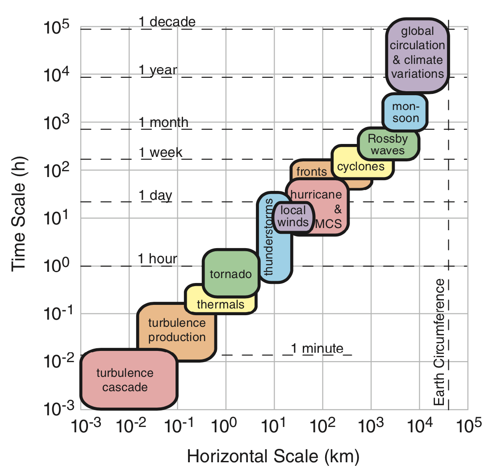
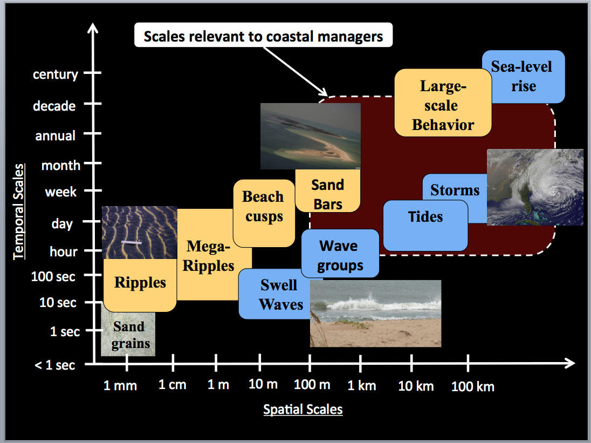
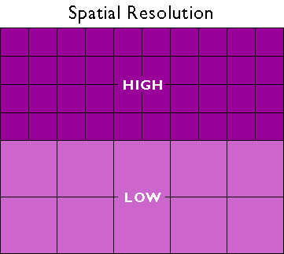
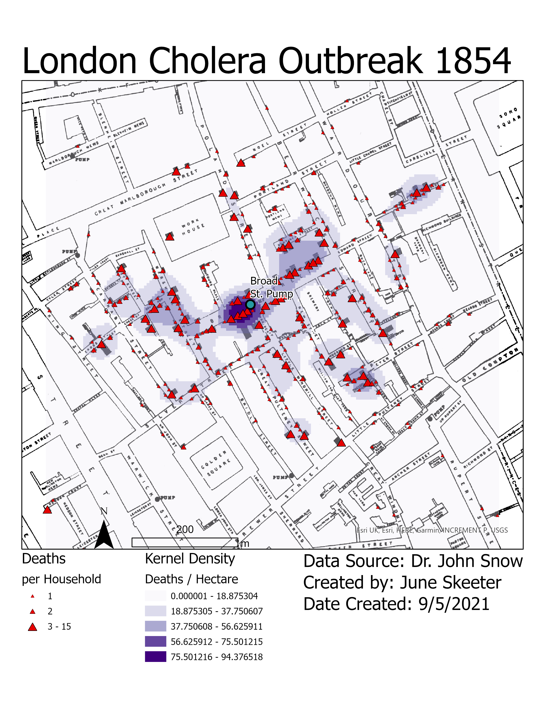
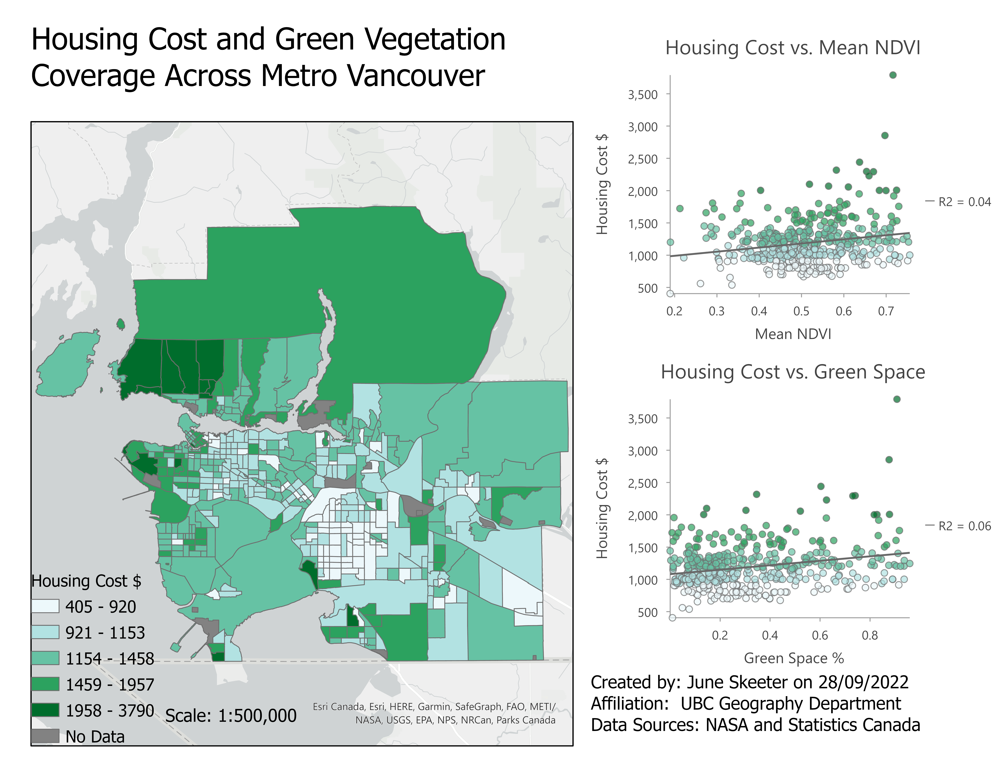

Choosing Data Model
Which data model is better?
TopHat Question 1
The spatial data models we use in GIS work by taking advantage of: (select all that apply)
- Tobler's First Law of Geography
- Causality
- Spatial Autocorrelation
- Spatial Heterogeneity
- Cheat Codes
TopHat Question 2
Bonnini's Paradox states that: As a model becomes more complex model becomes, it becomes:
- More useful
- Less understandable
- Easier to use
- Larger
Comparing Data Models
Raster
Usually continuous fields
- Full coverage over domain
- Grid of equally sized cells
- Data "gaps" must be given a value
(i.e., NODATA) - Separate bands for each attribute
- Each cell has one value per band
- One raster can have many bands
Vector
Usually discrete objects
- Only represents features of interest
- Points, Lines, and/or Polygons
- Can overlap, have gaps, or be continuous
- Each object can have many attributes
- Attribute table links spatial and non-spatial data
- Topology rules
- Connectivity and relationships between features
Advantages
Raster
- Good for continuous variables
- Features that do not have distinct boundaries
- Simple data structure
- Overlay is easy and efficient
Vector
- Good for discrete objects
- Features that are have distinct, fixed in boundaries
- Compact data structure
- More efficient storage
- Easy to query and select by attributes
Disadvantages
Raster
- Mixed pixel problem
- One attribute per cell
- Large data volumes
Vector
- No variability within polygons
- Complex data structure
- Overlay can be computationally expensive
TopHat Question 3
Select the best method for representing each phenomena:
- Precipitation observations from weather stations across Canada
- Precipitation forecasts for an atmospheric river
- Census tracts in Metro Vancouver
- Hiking trails in Garibaldi Park
Resolution &. Scale
These properties can influence our choice of model.
- How does the scale of our analysis dictate our desired resolution?
- How can resolution of the data limit the scale of our analysis?




Resolution &. Scale
We want to work with high resolution data because:
↑ resolution = ↓ generalization = ↓ uncertainty
- But in reality, this isn't always practical or possible. High resolution data may
- Be too expensive $$$
- Take too long to collect or process
- Infringe on individuals privacy or endanger marginalized people
- We must try to strike a balance
- Find what suits our needs without hindering adding unnecessary risk, expense, or complexity
Things to consider
What is the "lowest" acceptable resolution?
- Smaller scale analysis won't need the same level of detail.
- Looking at national immigration patterns, maybe you only need provincial level data?
Things to consider
Change the scope of our analysis?
- If you need a high resolution analysis, work at a larger scale and focus on a small area.
- If you need to analyze a large area, work at small scales and accept the uncertainty that comes with coarser resolution.
Working Together
Frequently we'll end up working with both raster and vector data in the same analysis.
- In Module 1, you worked with:
- Cholera deaths (points)
- Vector Data Model
- Kernel density (probability of deaths)
- Raster Data Model

Working Together
- NDVI (Raster Data Model)
- Census units (Vector Data Model)
- Exploring two approaches
- Zonal Statistics:
Faster, but in a more limited applicability. - Raster to Polygon Conversion: Converting between data types requires more, but it is more flexible.

TopHat Question 4
Which of the following are true (select all that apply):
- Scale is a property of your analysis while resolution is a property of your data.
- Scale is a property of your data while resolution is a property of your analysis.
- Scale and resolution are properties of your analysis.
- We always want to work with the highest resolution data available.
- Both the raster and vector data models are useful ways to represent spatial data.
TopHat Question 5
How do you feel about the pace of lecture and the lab workload so far?
- The pace of lecture is too fast and the lab workload is overwhelming.
- The pace of lecture is good and the lab workload is overwhelming.
- The pace of lecture is good and the lab workload is manageable.
- The pace of lecture is too slow and the lab workload is manageable.
- The pace of lecture is too slow and the lab workload is too easy.